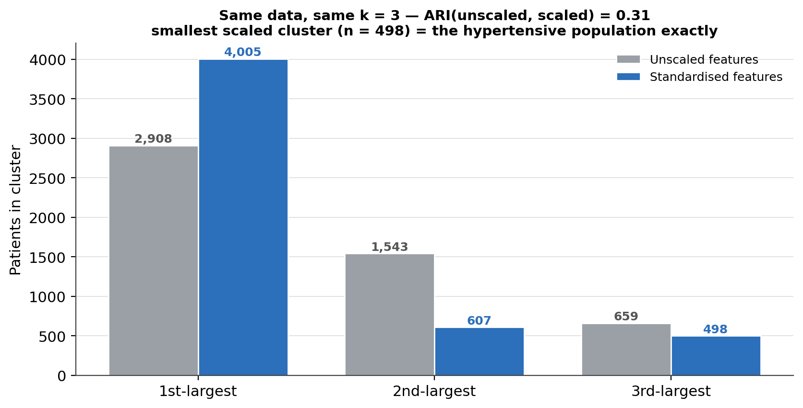
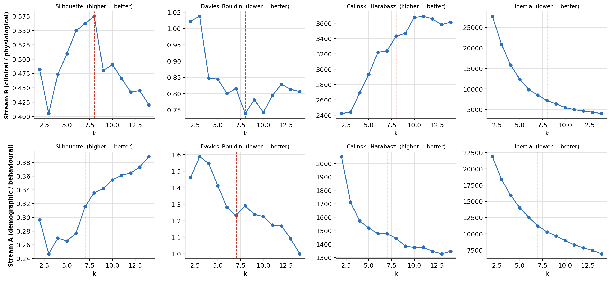
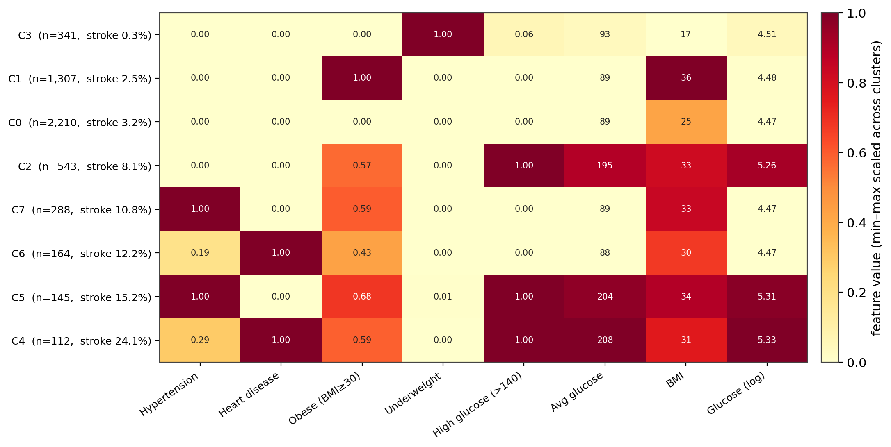
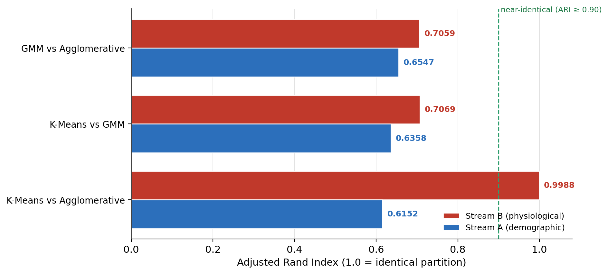
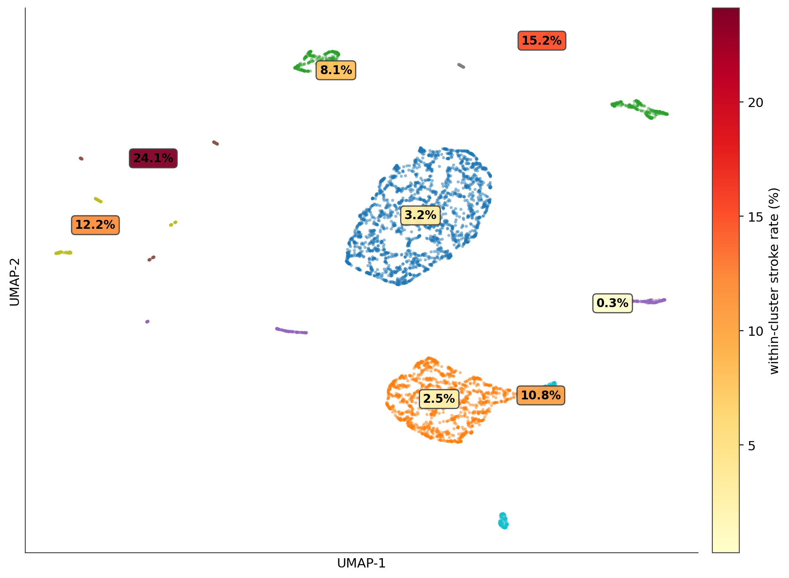
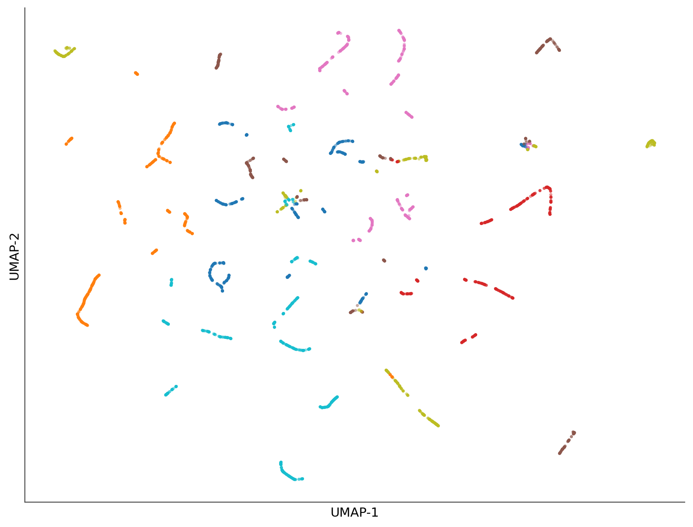
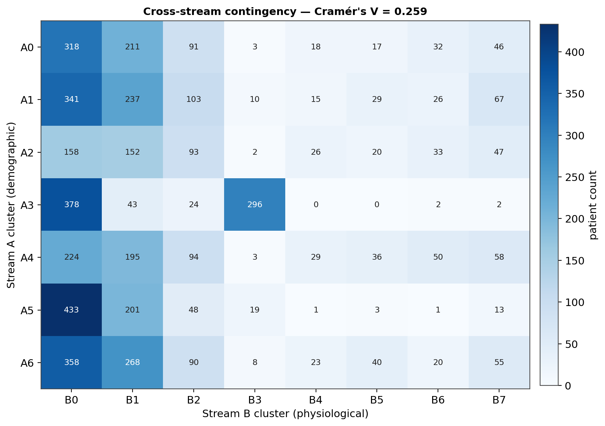
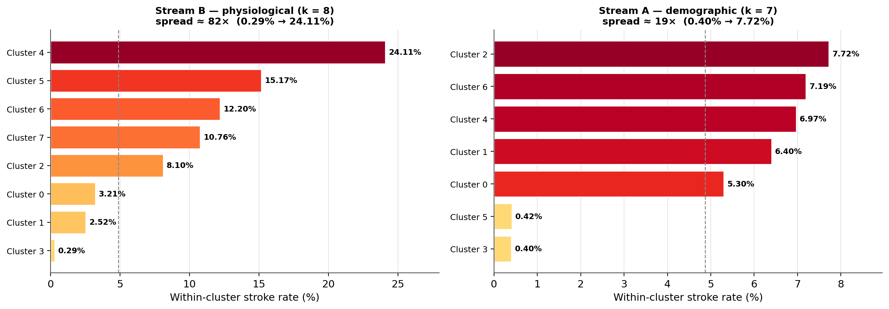
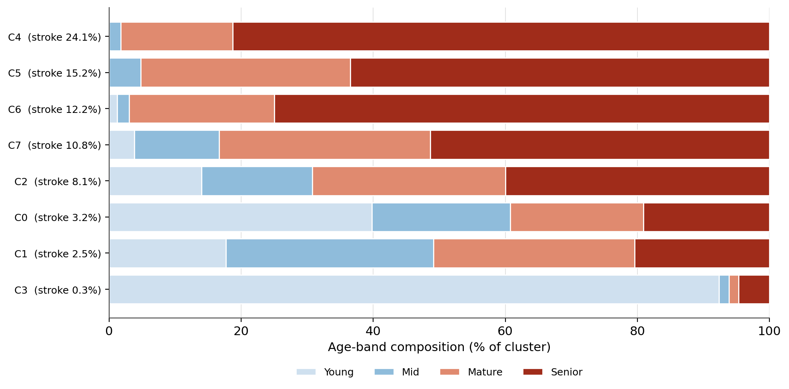

Unsupervised Patient Phenotyping: Two-Stream Clustering of a Stroke Cohort With Cross-Algorithm Validation
Segmenting 5,110 patients along a physiological and a demographic feature stream — four algorithms, agreement rather than a single winner, and a post-hoc read against the stroke outcome the clustering never saw.
Label-free segmentation of a 5,110-patient stroke cohort along two feature streams. Physiological stream: eight phenotypes with stroke rates from 0.3% to 24.1% — an ~83× spread the supervised models never surfaced. Cross-algorithm validation: K-Means and Ward agree at ARI 0.9988 on the physiological stream, only 0.62–0.65 on the demographic one. Cross-stream link: the two partitions share Cramér’s V = 0.26, driven almost entirely by age. The stroke label entered no distance calculation.
unsupervised learning, patient phenotyping, K-means clustering, agglomerative clustering, Gaussian mixture model, HDBSCAN, UMAP, adjusted Rand index, cross-algorithm validation, Cramér’s V, feature scaling, stroke cohort, Python, scikit-learn
Abstract
This study segments a 5,110-patient stroke cohort with unsupervised clustering, deliberately withholding the stroke label from every distance and density calculation, then reads the resulting phenotypes against that label post hoc. The feature space is split into two streams — a six-feature demographic/behavioural stream (age, smoking, marital status, occupation, gender, residence) and an eight-feature clinical/physiological stream (hypertension, heart disease, glucose, BMI, and derived flags) — clustered independently and reconciled afterward. Four algorithms are applied (K-means, Ward agglomerative, Gaussian mixture, HDBSCAN) and their agreement is reported rather than a single method chosen. The physiological stream resolves cleanly into eight phenotypes: silhouette and Davies–Bouldin both turn over at k = 8, and K-means and Ward agglomerative recover the same partition at an adjusted Rand index (ARI) of 0.9988. Those eight phenotypes carry stroke rates from 0.29% (an underweight, child-dominated cluster) to 24.11% (a 112-patient cluster with co-occurring heart disease and hyperglycaemia) — an ~83-fold spread around the 4.87% cohort rate. The demographic stream is weaker: its metrics never converge, k = 7 is a documented judgement call, and cross-algorithm ARI is only 0.62–0.65; its seven profiles span a narrower 0.40%–7.72% stroke range. The two partitions share a moderate association (Cramér’s V = 0.26, χ²(42) = 2,059), driven almost entirely by age. Unsupervised phenotypes recover, from features alone, the clinical-risk hierarchy the supervised models were trained to predict.
Keywords: unsupervised learning, patient phenotyping, K-means, HDBSCAN, adjusted Rand index, cross-algorithm validation
Introduction
Supervised models for stroke answer “who is at risk?” against a fixed label. This study asks a different question: what patient phenotypes exist in the feature space independent of that label, and do any of them carry disproportionate stroke incidence? If clustering that never sees the outcome recovers the same risk structure a classifier was trained to find, that is evidence the structure is real in the data rather than an artefact of the labelling process.
Two design choices shape the analysis. First, the feature space is split into two streams rather than clustered jointly: a demographic/behavioural stream (6 features) and a clinical/physiological stream (8 features). Distance-based clustering degrades in higher-dimensional mixed-type spaces, and the split allows a question a single joint clustering cannot answer — do the two axes describe the same patients the same way, or capture genuinely different variation? Second, four clustering algorithms are run and their agreement measured, rather than one method chosen and reported in isolation. Agreement across methods with different assumptions is the calibration: where they converge, the structure is trustworthy; where they diverge, that is itself the finding.
The stroke label is excluded from every feature matrix and every distance, density, or similarity computation. Its only appearance is a post-hoc cross-tabulation against final cluster membership.
Method
Data source
The cohort is the open Stroke Prediction Dataset (fedesoriano, 2021): 5,110 patients, 4.87% stroke prevalence, processed through a medallion-style extract–transform–load pipeline. This analysis uses the full cohort — no train/test split, no sampling — because clustering describes the population as a whole. After dropping a pre-imputation audit column, the working frame holds 5,110 rows and 23 columns (an identifier, the outcome, and 21 model features).
Two-stream feature design
The two feature matrices (Table 1) were built from disjoint feature sets. Stream A (demographic/behavioural) uses age, smoking status, marital status, gender, work type, and residence type. Stream B (clinical/physiological) uses hypertension, heart disease, average glucose, BMI, log-glucose, and the obesity, underweight, and elevated-glucose flags. Four exclusions were applied to both streams:
- The stroke outcome — never an input; post-hoc cross-tabulation only.
- The four interaction terms (age × glucose, age × BMI, hypertension × glucose, smoker × obese) — each is highly collinear with its parent features, so including it alongside them double-weights the parents’ variance in a distance metric without adding information.
- The current-or-former-smoker flag from Stream A — a deterministic function of smoking status; the three-level variable is retained because it carries the former-versus-current distinction the flag discards.
- The four-band age variable from Stream A — a deterministic binning of continuous age; retaining both would double-weight age.
Smoking status was encoded with an explicit clinical ordering (never = 0, formerly = 1, currently = 2) rather than an alphabetical sort that would place “currently” and “formerly” adjacent by spelling alone. Both matrices were standardised (zero mean, unit variance) with independent scalers before any distance was computed.
Table 1
Composition of the Two Feature Streams
| Stream A — demographic / behavioural | Stream B — clinical / physiological | |
|---|---|---|
| Features | 6 | 8 |
| Numeric | age | average glucose, BMI, log-glucose |
| Ordinal (explicit) | smoking status (never/former/current) | — |
| Binary | ever married | hypertension, heart disease, obese, underweight, elevated glucose |
| Nominal → ordinal codes | gender, work type, residence type | — |
| Excluded (shared) | stroke outcome; 4 interaction terms; current-or-former-smoker flag; four-band age variable | stroke outcome; 4 interaction terms |
| Scaling | independent StandardScaler |
independent StandardScaler |
Note. Exclusions are collinearity- or leakage-driven (see text). Nominal categoricals were ordinal-encoded for a Euclidean metric, with cardinalities kept low (2–5 levels).
Why standardisation is not optional
Distance-based algorithms treat every feature axis equally in absolute units. Average glucose spans ~217 units; a binary flag spans exactly 1. Unstandardised, a one-unit glucose difference — clinically trivial — contributes as much to Euclidean distance as flipping hypertension status. A demonstration on the glucose-and-hypertension pair quantifies the effect (Figure 1, Results).
Clustering algorithms and model selection
Four algorithms were applied. K-means (Lloyd, 1982) partitions to k centroids under a spherical, equal-size assumption; fast and interpretable, it is the baseline. Agglomerative clustering with Ward linkage (Ward, 1963) builds a bottom-up merge hierarchy under the same variance-minimising objective but no sphericity assumption. Gaussian mixture models (GMM; Reynolds, 2009) replace centroids with multivariate Gaussians and give each patient a membership probability. HDBSCAN (Campello et al., 2013) is density-based, requires no k, and labels points in no dense region as noise — applied only to Stream B, on the rationale that a patient whose physiology fits no dense cluster is a plausible atypical case.
For the partition methods, k was chosen by sweeping k = 2–14 across four metrics — the silhouette coefficient (Rousseeuw, 1987; higher is better), the Davies–Bouldin index (Davies & Bouldin, 1979; lower is better), the Calinski–Harabasz index (Caliński & Harabasz, 1974; higher is better), and inertia — and reading for convergence or documented tension between them.
Validation
Cross-algorithm agreement was measured with the adjusted Rand index (ARI; Hubert & Arabie, 1985), where 1.0 is an identical partition and 0.0 is chance. Cross-stream association between the two partitions was quantified with Cramér’s V on their contingency table. Visual confirmation used PCA (Hotelling, 1933) as a conservative linear baseline and UMAP (McInnes et al., 2018) as a non-linear, neighbourhood-preserving projection, read together to guard against 2-D projection artefacts.
Software and reproducibility
Analyses used scikit-learn (Pedregosa et al., 2011), umap-learn (McInnes et al., 2018), hdbscan (McInnes et al., 2017), SciPy (Virtanen et al., 2020), NumPy (Harris et al., 2020), and pandas (The pandas development team, 2020), with a fixed random seed (412). All partition results, ARIs, centroids, and cross-tabulations reproduced exactly on re-execution; one density-based figure differed slightly by library version and is flagged where it appears.
Results
Standardisation changes the partition
Clustering the glucose-and-hypertension pair at k = 3 gives an ARI of only 0.31 between the unstandardised and standardised partitions — closer to chance than to agreement (Figure 1). Unstandardised, K-means splits the 5,110 patients 2,908 / 1,543 / 659 — functionally a one-dimensional split on glucose, with hypertension (1/217 of the weight) invisible. Standardised, the split becomes 4,005 / 607 / 498 — and 498 is exactly the hypertensive population. Once both features carry equal weight, K-means recovers hypertension status as a near-pure splitting axis. Unstandardised features do not merely shift boundaries; they can erase a binary clinical flag from the clustering.
Figure 1
Standardisation Changes the K-Means Partition of the Same 5,110 Patients

Note. Bars are cluster sizes sorted largest to smallest. The unstandardised and standardised partitions agree at ARI = 0.31. The smallest standardised cluster (n = 498) matches the hypertensive population exactly.
Stream B: the metrics converge on eight phenotypes
For the clinical/physiological stream, the silhouette coefficient peaks at k = 8 (0.575, the global maximum over k = 2–14) and Davies–Bouldin bottoms out at the same k (0.739, the global minimum) — two metrics with different foundations turning over at exactly the same point (Figure 2, Table 2). Calinski–Harabasz reaches a shallow plateau around k = 10–11 but does not contradict the convergence. This is what genuine multi-metric agreement looks like: a sharp, unambiguous inflection.
Table 2
K-Means Selection Metrics at the Chosen k, by Stream
| Stream | Chosen k | Basis | Silhouette | Davies–Bouldin | Calinski–Harabasz | Inertia |
|---|---|---|---|---|---|---|
| B — clinical / physiological | 8 | silhouette max and Davies–Bouldin min | 0.575 | 0.739 | 3,432 | 7,161 |
| A — demographic / behavioural | 7 | judgement call — no metric convergence | 0.316 | 1.231 | 1,477 | 11,202 |
Note. Sweep range k = 2–14. For Stream B, k = 8 is the global optimum on two independent metrics. For Stream A (see below), k = 7 is the one point where silhouette and Davies–Bouldin both step out of the k = 3–6 trough before resuming a smooth drift.
Figure 2
Four-Metric k-Selection Sweeps for Both Streams (k = 2–14)

Note. Dashed line marks the selected k. Stream B shows a clean joint turning point at k = 8; Stream A’s metrics never converge.
Stream B: eight physiological phenotypes
The inverse-scaled K-means centroids give each cluster a clinical identity (Figure 3, Table 3). Four clusters split on a single axis; the remaining four form a 2 × 2 grid crossing cardiac status against glycaemic status:
- Cluster 0 — Physiologically unremarkable (2,210 patients, 43.2%). Every comorbidity flag near zero; glucose and BMI near or below the cohort mean. The baseline against which excess risk is read.
- Cluster 1 — Isolated obesity (1,307, 25.6%). Every patient obese (mean BMI 36.0); hypertension, heart disease, and glucose all near zero.
- Cluster 2 — Hyperglycaemia without cardiac disease (543, 10.6%). Elevated-glucose flag at 1.0, mean glucose 195 mg/dL; roughly half obese; no cardiac comorbidity.
- Cluster 3 — Underweight (341, 6.7%). Underweight flag at 1.0, mean BMI 16.7; every other flag near zero.
- Clusters 4–7 — the comorbidity grid (112–288 patients each). Cluster 4 = heart disease + hyperglycaemia (mean glucose 208, the highest of any cluster); Cluster 5 = hypertension + hyperglycaemia; Cluster 6 = heart disease, normal glucose; Cluster 7 = hypertension, normal glucose. Cardiac disease and hyperglycaemia combine independently here rather than as a single “sick” cluster.
Table 3
The Eight Stream B Phenotypes: Centroid Summary, Size, and Post-Hoc Stroke Rate
| Cluster | Label | n | % | Mean glucose | Mean BMI | Defining flags | Stroke rate |
|---|---|---|---|---|---|---|---|
| 0 | Physiologically unremarkable | 2,210 | 43.2 | 89 | 24.8 | none | 3.21% |
| 1 | Isolated obesity | 1,307 | 25.6 | 89 | 36.0 | obese | 2.52% |
| 2 | Hyperglycaemia, no cardiac disease | 543 | 10.6 | 195 | 32.5 | high glucose | 8.10% |
| 3 | Underweight | 341 | 6.7 | 93 | 16.7 | underweight | 0.29% |
| 4 | Heart disease + hyperglycaemia | 112 | 2.2 | 208 | 31.3 | heart disease, high glucose | 24.11% |
| 5 | Hypertension + hyperglycaemia | 145 | 2.8 | 204 | 34.0 | hypertension, high glucose | 15.17% |
| 6 | Heart disease, normal glucose | 164 | 3.2 | 88 | 29.7 | heart disease | 12.20% |
| 7 | Hypertension, normal glucose | 288 | 5.6 | 89 | 32.9 | hypertension | 10.76% |
Note. Stroke rate is post-hoc; the outcome was not a clustering input. Cohort rate = 4.87%.
Figure 3
Stream B Phenotype Profiles: Inverse-Scaled Centroids, Ordered by Stroke Rate

Note. Cells are min–max scaled per feature across the eight centroids for a comparable colour scale; printed values are in original units. Row labels carry cluster size and post-hoc stroke rate.
Stream B: three algorithms recover the same partition
K-means and Ward agglomerative — top-down centroids versus bottom-up hierarchical merges — produce an ARI of 0.9988 at k = 8 (Figure 4, Table 5): effectively the same partition recovered twice by unrelated methods, cluster sizes matching almost to the patient. GMM agrees less exactly (ARI 0.71 against each) — its non-spherical model splits K-means’ largest “no comorbidity” cluster (2,210) into two sub-populations of 1,057 and 1,153 that sum to exactly 2,210, a genuine secondary structure rather than disagreement. GMM’s soft assignment is barely exercised: 95.4% of patients receive a maximum cluster probability above 0.99.
HDBSCAN, run without being told how many clusters to find, independently recovers the two dominant clusters (2,210 and 1,307) at matching sizes across every min_cluster_size from 25 to 250. At the finest setting it flags 15 patients (0.29%) as noise — a negligible fraction. Ten of the fifteen carry extreme BMI (54.7 to 97.6, the dataset maximum), far beyond any cluster centroid; the rest sit at classification boundaries. Physiological feature space at this scale is dense: there is no meaningful outlier population for a density method to surface, and the density-based view corroborates the partition structure rather than revising it. (The original notebook run flagged 5 noise patients at this setting; the difference is a density-library version effect and does not change the conclusion.)
Stream A: the metrics refuse to converge
The demographic/behavioural stream tells the opposite story (Figure 2, lower row). Calinski–Harabasz favours k = 2 throughout — a known bias toward fewer clusters. Silhouette and Davies–Bouldin keep improving all the way to k = 14 with no plateau, a pattern more consistent with the mechanical tightening of ever-smaller clusters in a space dominated by one continuous feature (age) than with new structure emerging at each step. k = 7 is a documented judgement call, chosen as the single point where silhouette and Davies–Bouldin both step out of the k = 3–6 trough before resuming a smooth drift.
Stream A: seven demographic profiles
The K-means centroids (Table 4) resolve into a life-stage trio and a four-way grid. Cluster 3 (“Children”, mean age 8.5) and Cluster 5 (“Young unmarried adults”, mean age 26.3) are the youngest and most distinct. Cluster 0 (“Current smokers”) is pulled out by smoking status alone regardless of age. Clusters 1, 2, 4, and 6 share a near-identical profile — older (mean age 55–57), married (96–98%), private-sector — and differ only on gender and residence, each resolving cleanly to 0 or 1. These four account for 2,910 patients (56.9%): the majority of the cohort is one life-stage crossed by gender and residence.
Table 4
The Seven Stream A Demographic/Behavioural Profiles
| Cluster | Label | n | % | Mean age | Distinguishing features | Stroke rate |
|---|---|---|---|---|---|---|
| 3 | Children | 745 | 14.6 | 8.5 | child-care occupation, unmarried | 0.40% |
| 5 | Young unmarried adults | 719 | 14.1 | 26.3 | unmarried, mixed occupation | 0.42% |
| 0 | Current smokers | 736 | 14.4 | 46.2 | smoking status = currently | 5.30% |
| 1 | Older married workers — female, rural | 828 | 16.2 | 54.7 | married, private-sector | 6.40% |
| 2 | Older married workers — male, urban | 531 | 10.4 | 57.1 | married, private-sector | 7.72% |
| 4 | Older married workers — male, rural | 689 | 13.5 | 55.6 | married, private-sector | 6.97% |
| 6 | Older married workers — female, urban | 862 | 16.9 | 55.5 | married, private-sector | 7.19% |
Note. Stroke rate is post-hoc. Clusters 1, 2, 4, 6 differ only on gender and residence.
Stream A: agreement is real but fragile
Stream A’s three algorithms agree only moderately: K-means vs. GMM 0.636, K-means vs. Ward 0.615, GMM vs. Ward 0.655 (Figure 4, Table 5) — well above chance, so the structure is real, but nothing like Stream B’s near-identical recovery. GMM’s internal certainty is if anything higher (99.4% of patients above 0.99 max probability): it is confidently finding a different partition, not hedging. The seven-cluster partition is a real but algorithm-sensitive signal.
Table 5
Cross-Algorithm Agreement (Adjusted Rand Index), by Stream
| Algorithm pair | Stream B | Stream A |
|---|---|---|
| K-means vs. Ward agglomerative | 0.9988 | 0.6152 |
| K-means vs. GMM | 0.7069 | 0.6358 |
| GMM vs. Ward agglomerative | 0.7059 | 0.6547 |
Note. ARI 1.0 = identical partition; 0.0 = chance. Stream B’s physiological structure is algorithm-independent; Stream A’s is not.
Figure 4
Cross-Algorithm Agreement (ARI) for Both Streams

Note. Dashed line at ARI = 0.90 marks near-identical agreement. Only Stream B’s K-means/Ward pair clears it.
Visual confirmation
PCA retains 61.2% of Stream B’s variance in two dimensions and 53.8% of Stream A’s. The UMAP projections (Figures 5 and 6) confirm the numeric picture directly. Stream B shows a clearly dominant cluster, a second large cluster set apart, and several small, cleanly separated groups — the structure that survived cross-algorithm validation. Stream A fragments into dozens of small scattered segments with no colour occupying one coherent region — the visual signature of a weak, interleaved partition built from a handful of low-cardinality categoricals plus one continuous axis.
Figure 5
Stream B UMAP Projection, Coloured by Phenotype and Annotated With Stroke Rate

Note. Each cluster is labelled with its post-hoc stroke rate; label fill encodes that rate. The eight groups the algorithms agreed on appear as visually distinct regions.
Figure 6
Stream A UMAP Projection, Coloured by Cluster

Note. The fragmentation is consistent with Stream A’s low cross-algorithm ARI: the seven-cluster partition is real but not geometrically crisp.
The two streams are linked, and the link is age
Cramér’s V between the two partitions is 0.259 (χ²(42) = 2,059, p < .001) — a moderate association (Figure 7). Knowing a patient’s demographic phenotype says something real about their physiological phenotype, even though age never entered Stream B. The strongest thread is life-stage: Stream A’s “Children” cluster maps almost entirely onto two Stream B clusters — 378 into “physiologically unremarkable” and 296 into “underweight” — and 296 of Stream B’s 341 “underweight” patients (86.8%) are Stream A’s Children. The two streams describe the same paediatric sub-population from different angles.
Figure 7
Cross-Stream Contingency: Stream A (Demographic) Clusters × Stream B (Physiological) Clusters

Note. Cramér’s V = 0.259. The bright cell at row A3 / column B3 (296 patients) is the Children ↔︎ Underweight overlap.
Stroke incidence by phenotype — the central finding
The two streams give sharply different answers to the question the study was built for (Figure 8, Table 6). Stream B’s physiological phenotypes span stroke rates from 0.29% to 24.11% — an ~83-fold spread. Cluster 4 (heart disease + hyperglycaemia, n = 112) carries a 24.11% rate, roughly five times the cohort average, and was found without the stroke label entering any computation. The other three comorbidity-grid clusters follow: 15.17%, 12.20%, 10.76% — all 2.2× to 5× the cohort rate. At the other extreme, the underweight cluster’s 0.29% is best explained by age (it is 92% young patients, and the dataset records essentially no paediatric strokes) rather than by underweight being protective. Stream A’s demographic phenotypes span a much narrower 0.40% to 7.72% — the same age-linked gradient at lower resolution, with no cluster exceeding 7.72%.
Table 6
Post-Hoc Stroke Rate by Cluster, Both Streams (Cohort Rate 4.87%)
| Rank | Stream B cluster | Stroke rate | Stream A cluster | Stroke rate | |
|---|---|---|---|---|---|
| Highest | 4 · Heart disease + hyperglycaemia | 24.11% | 2 · Older married — male, urban | 7.72% | |
| 5 · Hypertension + hyperglycaemia | 15.17% | 6 · Older married — female, urban | 7.19% | ||
| 6 · Heart disease, normal glucose | 12.20% | 4 · Older married — male, rural | 6.97% | ||
| 7 · Hypertension, normal glucose | 10.76% | 1 · Older married — female, rural | 6.40% | ||
| 2 · Hyperglycaemia, no cardiac disease | 8.10% | 0 · Current smokers | 5.30% | ||
| 0 · Physiologically unremarkable | 3.21% | 5 · Young unmarried adults | 0.42% | ||
| Lowest | 1 · Isolated obesity | 2.52% | 3 · Children | 0.40% | |
| 3 · Underweight | 0.29% | ||||
| Spread | ~83× | ~19× |
Note. The physiological stream separates the highest- and lowest-risk groups roughly four times more sharply than the demographic stream.
Figure 8
Post-Hoc Stroke Rate by Cluster, Sorted, for Both Streams

Note. Dashed line = cohort rate (4.87%). Bar colour encodes rate. The physiological spread dwarfs the demographic one.
Age and gender structure within phenotypes
The comorbidity clusters are overwhelmingly older (Figure 9): Cluster 4 is 81% senior with zero young patients, Cluster 6 is 75% senior, Cluster 5 is 63% senior. Comorbidity accumulating with age is a well-established pattern, and it emerged here from features that never included age. A gender skew runs alongside it: six of Stream B’s eight clusters over-represent men relative to the 41.4% cohort share, and only the two comorbidity-free clusters sit below it. The heart-disease clusters skew most (Cluster 6 is 62% male), but the pattern is broader than heart disease — consistent with cardiovascular and metabolic disease presenting more, and earlier, in men. The same male skew appears independently in the cross-stream contingency and in post-hoc interaction-term profiling.
Table 7
Age-Band and Gender Composition of the Stream B Phenotypes (Row %)
| Cluster | Young | Mid | Mature | Senior | % Male |
|---|---|---|---|---|---|
| 0 · Physiologically unremarkable | 39.8 | 20.9 | 20.2 | 19.1 | 37.4 |
| 1 · Isolated obesity | 17.7 | 31.4 | 30.5 | 20.4 | 39.5 |
| 2 · Hyperglycaemia, no cardiac disease | 14.0 | 16.8 | 29.3 | 40.0 | 47.0 |
| 3 · Underweight | 92.4 | 1.5 | 1.5 | 4.7 | 49.3 |
| 4 · Heart disease + hyperglycaemia | 0.0 | 1.8 | 17.0 | 81.2 | 54.5 |
| 5 · Hypertension + hyperglycaemia | 0.0 | 4.8 | 31.7 | 63.4 | 44.1 |
| 6 · Heart disease, normal glucose | 1.2 | 1.8 | 22.0 | 75.0 | 62.2 |
| 7 · Hypertension, normal glucose | 3.8 | 12.8 | 31.9 | 51.4 | 42.7 |
| Cohort | 29.6 | 19.9 | 23.5 | 26.9 | 41.4 |
Note. Every comorbidity cluster over-represents the two oldest age bands; six of eight clusters over-represent men.
Figure 9
Age-Band Composition of the Stream B Phenotypes, Ordered by Stroke Rate

Note. Clusters are ordered by post-hoc stroke rate (shown in each row label). Age was not a Stream B input; the senior dominance of the high-risk phenotypes emerged from the physiological features alone.
Discussion
Unsupervised phenotypes recover the risk hierarchy
The physiological stream, clustered without ever seeing the stroke label, produces eight phenotypes whose stroke rates span nearly two orders of magnitude and whose ordering is clinically coherent: comorbidity-grid clusters at the top, an unremarkable baseline in the middle, an age-explained underweight cluster at the floor. A supervised classifier trained on the label would surface the same structure; recovering it from features alone is evidence the structure is a property of the population, not of the labelling. The highest-risk phenotype — 112 patients with co-occurring heart disease and hyperglycaemia, at a 24% stroke rate — is exactly the kind of small, sharply defined subgroup an aggregate model can dilute.
The two-stream design earns its keep
Clustering the two feature sets separately, then reconciling them, answered a question a joint clustering could not: the streams share moderate information (Cramér’s V = 0.26) but capture genuinely different structure. Almost all the shared information is age. The physiological stream discriminates stroke risk; the demographic stream contextualises it. Had the 14 features been clustered jointly, the strong physiological signal and the weak demographic one would have been averaged into a single partition of indeterminate quality.
Report agreement, not a winner
Running four algorithms and reporting their agreement produced a calibrated confidence that picking one method would have hidden. Stream B’s structure is near-certain: three algorithms with different assumptions recovered it, one of them without being told how many clusters to find. Stream A’s is real but fragile: ARI 0.62–0.65, metrics that never converge, a k chosen by judgement. Both assessments are stated plainly rather than buried under a single silhouette score.
Limitations
The analysis is descriptive and cross-sectional; the stroke rates by phenotype are associations, not adjusted effects, and the underweight cluster’s low rate is explicitly an age artefact. Stream A’s partition is algorithm-sensitive and should be read as indicative only. Categorical features were ordinal-encoded for a Euclidean metric, which imposes a distance structure on nominally unordered categories (mitigated by keeping cardinalities low and ordering smoking status deliberately). The four comorbidity-grid clusters are small (112–288 patients), so their stroke rates carry wide sampling uncertainty. HDBSCAN’s noise count was the one quantity that did not reproduce exactly across library versions (5 vs. 15 patients); both figures are negligible and the conclusion is unaffected. UMAP layouts are seeded but remain a projection, not a metric.
Conclusion
Unsupervised clustering of this stroke cohort, with the outcome withheld from every distance calculation, recovers a clinical-risk hierarchy spanning an ~83-fold range in stroke incidence — concentrated entirely in the physiological feature stream, validated across four algorithms, and linked to the demographic stream almost entirely through age. The phenotypes are a descriptive complement to the supervised models: they show that the risk structure those models predict is legible in the features themselves.
References
Caliński, T., & Harabasz, J. (1974). A dendrite method for cluster analysis. Communications in Statistics, 3(1), 1–27. https://doi.org/10.1080/03610927408827101
Campello, R. J. G. B., Moulavi, D., & Sander, J. (2013). Density-based clustering based on hierarchical density estimates. In J. Pei, V. S. Tseng, L. Cao, H. Motoda, & G. Xu (Eds.), Advances in knowledge discovery and data mining (pp. 160–172). Springer. https://doi.org/10.1007/978-3-642-37456-2_14
Cramér, H. (1946). Mathematical methods of statistics. Princeton University Press.
Davies, D. L., & Bouldin, D. W. (1979). A cluster separation measure. IEEE Transactions on Pattern Analysis and Machine Intelligence, PAMI-1(2), 224–227. https://doi.org/10.1109/TPAMI.1979.4766909
fedesoriano. (2021). Stroke prediction dataset [Data set]. Kaggle. https://www.kaggle.com/datasets/fedesoriano/stroke-prediction-dataset
Harris, C. R., Millman, K. J., van der Walt, S. J., Gommers, R., Virtanen, P., Cournapeau, D., Wieser, E., Taylor, J., Berg, S., Smith, N. J., Kern, R., Picus, M., Hoyer, S., van Kerkwijk, M. H., Brett, M., Haldane, A., del Río, J. F., Wiebe, M., Peterson, P., … Oliphant, T. E. (2020). Array programming with NumPy. Nature, 585, 357–362. https://doi.org/10.1038/s41586-020-2649-2
Hotelling, H. (1933). Analysis of a complex of statistical variables into principal components. Journal of Educational Psychology, 24(6), 417–441. https://doi.org/10.1037/h0071325
Hubert, L., & Arabie, P. (1985). Comparing partitions. Journal of Classification, 2(1), 193–218. https://doi.org/10.1007/BF01908075
Lloyd, S. P. (1982). Least squares quantization in PCM. IEEE Transactions on Information Theory, 28(2), 129–137. https://doi.org/10.1109/TIT.1982.1056489
McInnes, L., Healy, J., & Astels, S. (2017). hdbscan: Hierarchical density based clustering. Journal of Open Source Software, 2(11), Article 205. https://doi.org/10.21105/joss.00205
McInnes, L., Healy, J., & Melville, J. (2018). UMAP: Uniform manifold approximation and projection for dimension reduction. arXiv. https://doi.org/10.48550/arXiv.1802.03426
Pedregosa, F., Varoquaux, G., Gramfort, A., Michel, V., Thirion, B., Grisel, O., Blondel, M., Prettenhofer, P., Weiss, R., Dubourg, V., Vanderplas, J., Passos, A., Cournapeau, D., Brucher, M., Perrot, M., & Duchesnay, É. (2011). Scikit-learn: Machine learning in Python. Journal of Machine Learning Research, 12, 2825–2830.
Reynolds, D. (2009). Gaussian mixture models. In S. Z. Li & A. Jain (Eds.), Encyclopedia of biometrics (pp. 659–663). Springer. https://doi.org/10.1007/978-0-387-73003-5_196
Rousseeuw, P. J. (1987). Silhouettes: A graphical aid to the interpretation and validation of cluster analysis. Journal of Computational and Applied Mathematics, 20, 53–65. https://doi.org/10.1016/0377-0427(87)90125-7
The pandas development team. (2020). pandas-dev/pandas: Pandas (Version latest) [Computer software]. Zenodo. https://doi.org/10.5281/zenodo.3509134
Virtanen, P., Gommers, R., Oliphant, T. E., Haberland, M., Reddy, T., Cournapeau, D., Burovski, E., Peterson, P., Weckesser, W., Bright, J., van der Walt, S. J., Brett, M., Wilson, J., Millman, K. J., Mayorov, N., Nelson, A. R. J., Jones, E., Kern, R., Larson, E., … SciPy 1.0 Contributors. (2020). SciPy 1.0: Fundamental algorithms for scientific computing in Python. Nature Methods, 17, 261–272. https://doi.org/10.1038/s41592-019-0686-2
Ward, J. H., Jr. (1963). Hierarchical grouping to optimize an objective function. Journal of the American Statistical Association, 58(301), 236–244. https://doi.org/10.1080/01621459.1963.10500845
Analytical workflow and figures by the author. Cluster–stroke associations are descriptive; the outcome was withheld from all clustering computation and read only post hoc.